TRIP：重新审视 CTR 预测的位置编码与交互粒度
Xinxun Zhang 等人的《Rethinking Positional Encoding and Interaction Granularity for CTR Prediction》由武汉大学牵头，与腾讯、北京大学合作，2026 年 10 月 27 日在 arXiv 首次公开。本笔记于 2026 年 10 月 29 日按原始全文与附录核验，论文入口为 arXiv:2610.37140。本轮未核验到本文独立代码或项目入口，引用工作的仓库不代表 TRIP 实现已经公开。
现有 Transformer CTR 模型经常沿用索引位置编码和逐事件因果交互，但作者观察到，多数既有位置编码并未优于无位置编码；在相对当前目标的时间组内放宽因果约束反而有收益。因此需要重新回答：点击率预测真正需要编码怎样的位置，又应当在怎样的粒度上组织历史行为交互？
1. 背景和问题
CTR 预测面对的是一条待曝光目标与此前用户历史，输出该目标发生点击的概率。历史中的商品、内容和行为不是一段等待续写的语言：用户可能在一天内连续比较几件相似衣服，也可能在一周内反复出现某种需求，事件发生顺序与兴趣持续时间承担不同作用。把每个事件当成 token，并套用自回归模型的绝对位置或旋转位置编码，虽然实现方便，却预先赋予了模型某种序列几何。这种几何是否匹配目标点击任务，不能仅凭 Transformer 在语言建模里的成功来判断。论文的出发点正是检验这种常被视为默认项的设计，而不是再添加一个与任务无关的位置模块。
作者在 OneTrans 上观察到两个现象。其一，在 KuaiRand 上，常见的学习式绝对位置、正弦位置和秩 RoPE 甚至落后于没有显式位置编码的 NoPE；时间相关变体也没有自动消除这种差距。其二，在某些目标相对的时间组内部允许双向交互，表现比逐事件因果交互更好。这里的“双向”仅针对当前预测时刻之前已经发生的事件，不允许读取未来曝光及其反馈。它改变的是过去事件彼此如何表征，而不是改变训练数据的时间可见性。若不区分这两层因果约束，就容易把一个有效的历史表征方案误读成数据泄漏，或者反过来错误允许目标之后的行为进入模型。
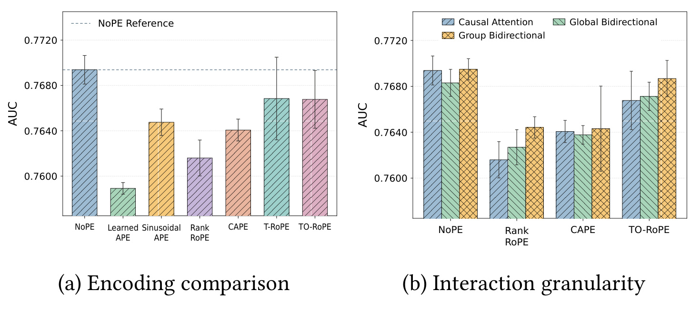
Figure 1 左面板以 KuaiRand 的 AUC 为纵轴，虚线给出 NoPE 参照，各柱对应不同编码方法。若仅按“加位置一定比不加好”理解序列建模，图中多根低于虚线的柱就无法解释；作者据此质疑的是这些特定编码在当前 CTR 设置的适配性，不能外推为所有推荐任务都不需要顺序。右面板固定四种编码，再比较事件因果、全局双向和组内双向三种交互。组内双向在这些设置下具有优势，说明局部相互解释与全局方向约束可以同时存在。图里的误差棒也提醒我们，这只是单个骨干、单个数据集的初始观察，不能替代后续四数据集主实验。它的证据作用是提出具体设计问题，而不是独立证明 TRIP 各组件的必要性。尤其不能将柱间差异写成线上点击提升：纵轴是离线区分能力，并不直接衡量曝光策略、用户体验或商业收入。
任务中至少有三类“位置”。序列秩描述一个行为在所保留历史里的相对序号，时间戳说明它何时发生，而目标相对时间说明它距离本次预测多久。对于同一份历史，如果目标曝光推迟，事件秩和原始时间戳可以完全不变，但时间差会变大。仅提供原始时间字段并不意味着注意力能够轻易学出这一关系；尤其是跨多个尺度的差值，既要保留近期行为的精细变化，又要避免为远古历史分配过多离散桶。另一方面，不规则活跃用户的一分钟内可能包含几十条事件，低活跃用户一天只有一条事件，因此“倒数第三条”也不能简单等同于某个时间距离。
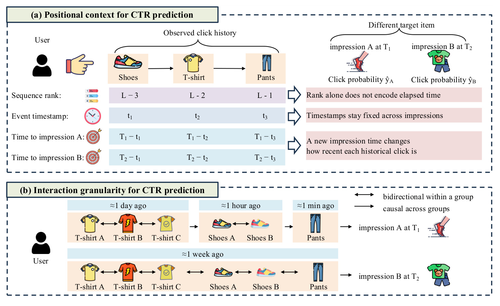
Figure 2 上半部分固定鞋、上衣、裤子的点击历史，用两次不同时间的目标曝光展示位置视角。序列编号不随新曝光改变，原始时间戳也固定，只有到曝光的时间差随目标时刻移动；这解释了为什么作者同时保留秩和目标相对时间，而不是以其中一种替代另一种。下半部分展示相同事件在较近目标下分成一天、一小时、一分钟等组，而在较远目标下可能归入同一个周级组。虚线双向箭头表示组内互相补充，一条单向箭头表示组间仍按历史向当前流动。图中服饰的具体含义只是说明任务设定，不能据此推断真实类别兴趣随时间的统计规律。其关键是分组也以本次目标为锚，因而同一历史不必永久拥有一套固定组。部署时若复用历史缓存，应检查请求时间变化是否要求重算这些分组与相对坐标，不能直接沿用跨日不变的位置特征。
第二个问题是事件交互的单位。逐事件因果模型只允许一个历史事件读取它之前的事件，这对于生成序列是自然约束，但在已完整观测的局部消费片段中，后来的比较行为也可能帮助理解前面的意图。完全取消方向性又会把所有兴趣阶段混为一谈。TRIP 选择在目标相对时间的局部组内交换信息，跨组保留因果方向，然后把已充分上下文化的局部行为压缩为组摘要。它希望压缩发生在事件彼此解释之后，而不是先丢失细节再要求后层恢复。这个顺序使时间关系、局部表征与计算节省形成一条有因果假设的设计链。
这些设计与现有特征交互模型相容：用户、目标、上下文等非序列字段仍作为预测侧 token，历史仍由有效行为和相应字段构成。论文并不将整个 CTR 系统替换成语言模型，也没有把用户行为转换为自然语言理由。研究范围主要是统一特征与序列 Transformer 内部的表示及注意力结构，因此迁移时首先应检查历史构造和时间字段质量。若真实系统的时间戳只精确到天，或者事件反馈跨多场景定义不一致，再细的秒级编码也不必然提供有效信息。后文 KuaiRand 的概率校准反例恰好说明，结构更适合区分点击，不代表它已经正确处理所有场景的基准点击概率。
在输入协议上，论文对短历史左侧补齐并右对齐有效事件，最近事件紧邻预测字段，padding 由有效性遮罩排除。于是位置索引不仅依赖事件相对顺序，还与保留容量和截断策略相关。若迁移时改成从零开始的变长秩，或者把补齐位也计入时间桶密度，模型看到的位置关系便与论文不同。研究问题因此也包含实现约定：一个看似简单的位置编码，实际上依赖历史构造、目标锚点和可见性共同定义，三者必须在对照实验中保持一致。
2. 方法
2.1 因子化秩编码：学习任务需要的位置关系
FRE 的输入是每个历史事件的序列秩及其原始嵌入，输出是加入位置表示后的历史 token。作者观察到学习式绝对位置表在经验上呈近似低秩，于是用共享基向量与各秩的系数表达位置差异。公共偏置和秩特有变化被分开，系数先跨秩中心化，避免公共方向重复吸收位置变化。它不强制相邻位置必须更接近，也不采用固定周期，所有参数接受 CTR 监督端到端优化。
符号解释：$L$ 是历史容量；$A\in\mathbb R^{L\times K}$ 是各秩的系数，$A_c$ 是中心化后矩阵，$\mathbf1$ 是全一向量；$B\in\mathbb R^{K\times D}$ 为共享基，$\boldsymbol\mu$ 为公共向量，$D$ 为隐藏维度，$K$ 为因子化宽度；$\gamma_\mu,\gamma_R$ 控制两分支，$\mathbf a_r^c$ 是第 $r$ 行，$\mathbf h_i$ 是事件原表示，$\mathbf x_i$ 是加位置后的输入。参数量由完整位置表的 $LD$ 变为 $D+LK+KD$。FRE 只应用到历史，不加到用户、目标等预测侧 token，摘要压缩后也不会再次添加。它提供可学习的秩区别，而非宣称低秩必然优于任何全参数表；当需要复杂位置差异时，过小的 $K$ 仍会限制表达。
2.2 目标相对时间：势能偏置与旋转两种实现
TRTE 先把事件到当前预测时刻的间隔映射为由近及远逐渐变粗的坐标。秒级差值先取对数，再按分辨率离散，因而细分参数控制的是时间读取粒度，不改变后文独立的分组规则。
符号解释：$T$ 为本次预测时间，$t_i$ 为历史事件时间，$\delta_i$ 以秒计，$m$ 为每个对数区间的细分数，$u_i$ 为离散坐标。近期的相同绝对差值占据更多坐标变化，远期更紧凑；有效历史必须早于目标。提高 $m$ 只增加区分能力，不保证泛化更好，稀疏数据可能不足以支撑精细桶的估计。
TRIP-B 使用每个注意力头独立学习的时间势能，并减去当前样本同时间桶事件数量的对数惩罚。由于 softmax 作用于事件，多事件时间段即使单条并不更相关，也可能积累更多总质量。密度校正针对这种数量优势，不是删除高活跃用户，也不是对整个数据集做统一重采样。
符号解释：$h$ 是头编号，$j_i$ 是时间桶，$\phi_h$ 为参数 $\theta_h$ 定义的头特有势能；$n_{j_i}$ 是该样本桶内有效事件数，$\lambda_{\mathrm{cnt}}$ 控制密度惩罚，$\beta$ 是校正后偏置；$\mathbf q,\mathbf k$ 为查询与键，$d_h$ 为头维度，$\mathcal V(q)$ 为可见键集合，$\alpha$ 为归一化权重。该加性偏置只施加于首个 Transformer 块的预测侧查询到历史键，其余对保留内容分。时间势能、校正偏置和最终注意力是三个不同对象，不能从势能曲线直接读取某条行为的最终权重。
TRIP-R 是另一种时间编码，不能与 B 版混写为同一个同时启用的模块。历史被放在负时间轴，预测侧位于原点，经截断的相对时间驱动 Q/K 旋转；它在全部 Transformer 块应用，而不是仅首块加偏置。
符号解释：$p^{\mathrm{time}}$ 为时间位置，$C_{\mathrm{rot}}$ 限制幅度，$R$ 为 RoPE 旋转，波浪号代表旋转后的向量，其余符号沿用前式。预测查询的零位置使历史相对当前目标发生旋转。压缩后的组摘要以组内时间戳的四舍五入均值作为代表时间，并重新计算坐标。两个变体具有不同开销和位置几何，效果应分别测量。
2.3 时间组因果交互：先上下文化，再压缩
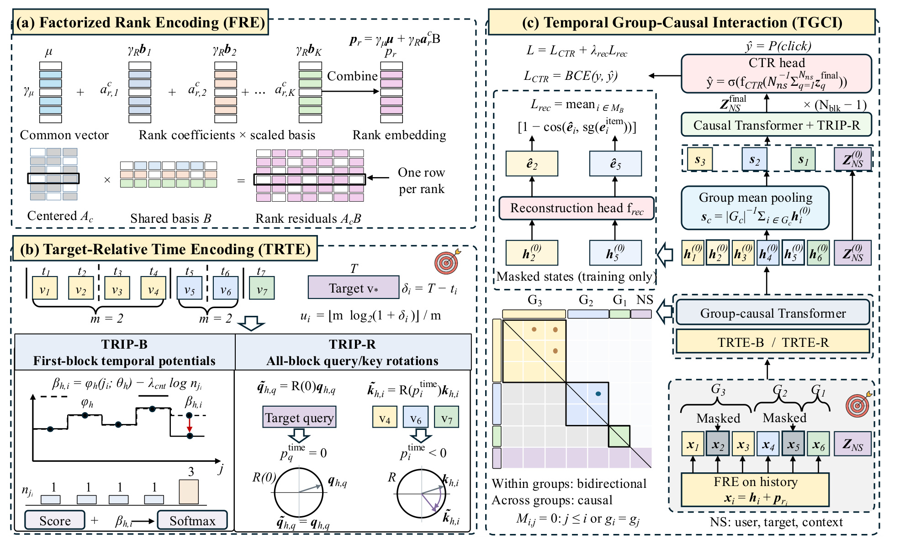
Figure 3 左上对应 FRE，公共向量与系数乘共享基共同产生历史位置向量，说明压缩参数并非直接对输入历史做 PCA。左下对应 TRTE，两列分别画出 B 版的首块势能和 R 版的逐块旋转，数据流并不相同。右侧从底部历史与预测字段开始，先由包含组内双向、跨组因果结构的首块处理全部事件，再对历史组作均值聚合，把短序列送入余下块，最终只从预测侧状态输出点击概率。旁路重建头读取首块中遮蔽位置的状态，仅在训练时接收原物品嵌入监督，推理不会额外生成物品或调用重建头。图中黄色、蓝色等矩形同时区分不同时间组及其摘要，使读者能看到为什么后续层输入更短；但首层仍需处理完整历史，所以这不是把所有层复杂度都变成组数平方。FRE 后的历史先参与局部信息交换，才被压缩，和直接把原事件平均再送模型存在重要区别。右边组摘要没有再添加一遍 FRE，R 版则会按代表时间重新旋转，复现时不能沿用每条原事件的时间索引。
分组使用目标时间差的对数区间，并给同组事件放开双向可见性：
符号解释：$g_i$ 是组标号，$C_{\mathrm{grp}}$ 是组上限，$\mathcal G_c$ 是某非空组事件集合；$i,j$ 按时间排序，$M$ 是 softmax 前的加法遮罩。同组中较晚发生的历史可以被较早历史读取，但目标后的未知事件仍不属于输入。分组分辨率与 TRTE 的 $m$ 独立，改变时间读取精度时不能无意改变实验组数。
符号解释：$\mathcal M$ 为被遮蔽历史位置，$\mathbf h_i^{(0)}$ 为首块输出，$f_{\mathrm{rec}}$ 为层归一化及两层 MLP 重建头，$\widehat{\mathbf e}_i$ 为预测物品嵌入；$\mathbf s_c$ 是组摘要。训练选择组内遮蔽位置时，至少两事件的组保留被遮蔽和可见两种事件，防止重建失去全部局部内容。摘要替换历史 token，预测侧 token 则保留，后续组级因果层建模兴趣演化。
2.4 点击目标与上下文重建的联合优化
符号解释：$N_{\mathrm{ns}}$ 是用户、目标及上下文形成的预测侧 token 数，$\mathbf z_q^{\mathrm{final}}$ 是最终状态，$f_{\mathrm{CTR}}$ 为 MLP，$\sigma$ 为 sigmoid，$\widehat y$ 是点击概率。模型不从历史组摘要直接做多目标输出，而由预测侧整合用户历史和当前目标。训练点击项采用标准二元交叉熵：
符号解释：$\mathcal B$ 为训练小批，$y_b$ 是真实反馈，$\widehat y_b$ 是模型概率，$\mathcal L_{\mathrm{CTR}}$ 惩罚过高的错误置信度。正因为交叉熵依赖概率本身，它和只看相对排序的 AUC 可能给出不同评价。
符号解释：$\mathcal M_{\mathcal B}$ 是批内遮蔽事件，$\mathbf e_i^{\mathrm{item}}$ 为原物品嵌入，$\cos$ 为余弦，$\operatorname{sg}$ 对重建目标停止梯度，$\lambda_{\mathrm{rec}}$ 控制辅助强度，$\mathcal L$ 是联合损失。重建与点击共享一次被遮蔽输入及骨干前向，前 5% 训练步线性升高辅助权重；推理关闭遮蔽和重建头。这个目标鼓励组内上下文恢复物品内容，但不能无限增大权重，否则容易让辅助任务压过真正的点击目标。
3. 实验结果
3.1 数据、对照与四数据集主结果
论文使用 KuaiRec、KuaiRand-1K、TAAC-1M 和 TaobaoAd，分别涉及短视频、随机曝光短视频和两类广告数据。最大历史长度依次为 200、200、100、300；训练样本约 1219 万、1091 万、471 万、2002 万。KuaiRec 与 KuaiRand 历史只保留正反馈，其余两者保留全部事件，TaobaoAd 的历史目标匹配使用类别 ID，广告组 ID 仍作为独立特征。因此不同数据上的改进幅度不能简单归因于同一种行为模式。所有模型保留事件原始时间与预测时间字段，时间编码对照不是故意从基线中拿走时间信息。
共享训练为单 H20、AdamW、一轮训练、BF16、相同学习率与批大小，按验证 AUC 选择 checkpoint，在种子 41、42、43 上报告均值和样本标准差。统一模型的块数和隐藏宽度尽量对齐，但某些基线保留自身头数或每头维度；公平控制并不意味着所有模型逐参数等容量。单轮训练减少稀疏嵌入反复曝光的过拟合风险，也限定了结论适用的训练预算，不能替代各模型充分调参后的普适排名。
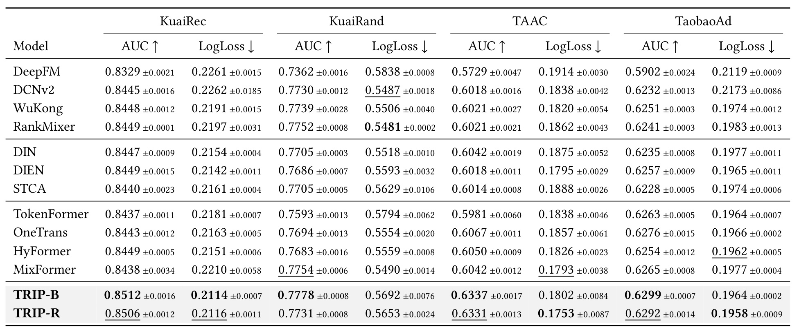
Table 2 的四组列分别给出 AUC 与 LogLoss，前者越高越好，后者越低越好。TRIP-B 的 AUC 为 0.8512、0.7778、0.6337、0.6299，均超过所列十一种基线的最佳均值。最大相对增益在 TAAC：对 OneTrans 的 0.6067，差值是 0.0270，除以基线后约 4.45%，不是增加 4.45 个百分点，更不能写成线上点击率增加 4.45%。其余数据的增益较小，例如 KuaiRand 对 MixFormer 0.7754 的差仅 0.0024。表中 R 版在部分概率损失上更好，但 AUC 并非处处优于 B 版：KuaiRand 的 0.7731 甚至低于若干基线。作者所说的三数据集最低 LogLoss 也需要按两个变体理解，TAAC 与 TaobaoAd 最低值来自 R 版，不能声称 B 版四列全面最优。特别是 KuaiRand，B 版的 0.5692 明显高于 MixFormer 的 0.5490 及 DCNv2 的 0.5487，意味着总排序结果和概率可信度存在实质分歧。三种子标准差提供波动线索，但论文未因此给出所有逐项显著性结论。进一步看广告数据，TaobaoAd 的提升比 TAAC 小得多，而两者同属广告任务，这排除了简单按领域名称预测收益的做法。表中损失的下划线和粗体需逐列读，不能让最终一行模型名称造成全部指标领先的视觉印象。评估应同时报告最佳基线是谁及其原始值。
3.2 低秩依据与跨骨干位置迁移
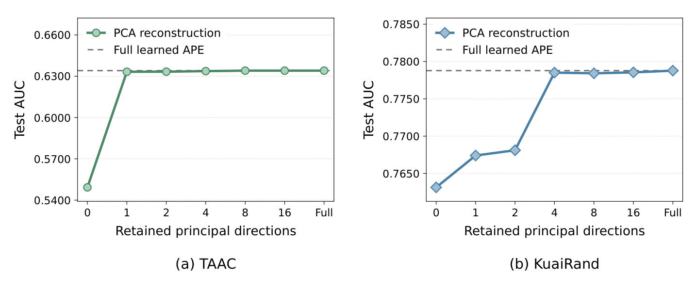
Figure 4 在 TAAC 和 KuaiRand 上逐渐增加保留的主方向，虚线是完整学习式位置表的成绩。TAAC 只需很少方向便大幅恢复表现，KuaiRand 则需要更多方向才能接近完整表，说明“紧凑秩结构存在”与“所有数据都只需一个方向”完全不同。横轴最后的 Full 是完整参照，不是又一个相同秩的配置。该实验是对训练后位置表的分析，用来启发 FRE 参数化；实际 FRE 从随机系数和共享基端到端训练，不使用图中的 PCA 结果初始化。曲线也不证明压缩任意预训练表示都无损，范围仅限论文所考察的位置表示。更有意义的后续验证是，在保留时间模块情况下比较 FRE 与其他位置替换，检验收益是否仅由加位置或加参数带来。这里展示的是两种数据的经验低秩性，不能把它当作所有 CTR 历史位置矩阵的数学定理。零个保留方向时，秩相关差异几乎被删除，性能显著下跌；从零恢复少数方向的跃升比高秩端微小波动更能说明位置差异确实含有预测信息。
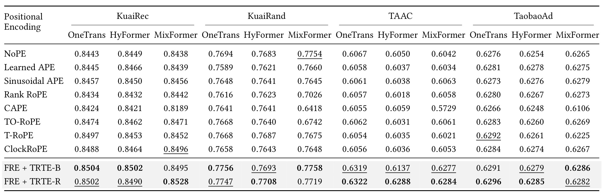
Table 3 不使用 TGCI，只把 FRE 与 TRTE 的组合放进 OneTrans、HyFormer、MixFormer，四个数据集共十二个设置。它因此检验位置表示本身的可迁移性，和完整 TRIP 改掉交互结构后的结果不同。B 组合在十个设置、R 组合在十一个设置优于最强其他编码，每个设置至少有一个组合最好；但不是两个组合同时在全部设置最优。TAAC 上 R 组合对三个骨干的相对 AUC 收益约为 4.20%、3.78%、3.65%，支持其贡献不只来自某个特定骨干。KuaiRand 的绝对位置与秩 RoPE 常低于 NoPE，与最初动机一致，但其他数据中仍有现有编码改善的例子。迁移意味着模块具有独立增益证据，不能据此推断加上完整 TGCI 后收益简单相加，也不能把这个表当作线上参数无须重调的保证。比较时还应注意它只报告均值，没有为这些小幅差异逐项展示统计显著性。例如 KuaiRec 的 MixFormer 在 B 组合下为零点八四九五，略低于 ClockRoPE 的零点八四九六，而 R 组合升到零点八五二八。这个反例具体说明了为什么必须保留两个变体，不能把“至少一个最好”写成“每个都最好”。
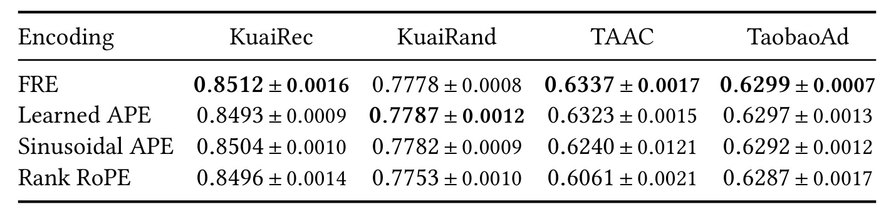
Table 4 把时间编码固定，仅换 FRE、学习式绝对位置、正弦和秩 RoPE，缩小了对照范围。TAAC 上 FRE 为 0.6337，学习式绝对位置 0.6323 十分接近，正弦为 0.6240，而秩 RoPE 为 0.6061，说明任务可学的秩表示比预先固定旋转几何更适合这一组数据。KuaiRand 上学习式绝对位置反而以 0.7787 超过 FRE 的 0.7778，所以 FRE 的价值应同时考虑参数节省，不能说它在准确率上无条件支配完整表。作者报告位置参数约节省 3.8 至 21.6 倍，这是位置编码部分的参数比，不是整个推荐模型缩小同样倍数。较紧凑表示可能改善归纳偏置和存储，但这张表并没有单独测量线上访问延迟。把 FRE 的紧凑性与主表最大相对增益并列时，必须说明它们对应不同实验，不是一个同时受控的总系统收益。表里正弦位置在 KuaiRand 也以零点七七八二略高于 FRE，说明紧凑可学表示并不垄断这个数据的有效顺序信号。真正支持论文设计的是跨数据的稳定性与参数量的联合考量，而非选择性忽略这两项反例。
3.3 组件消融、时间偏置与分组控制
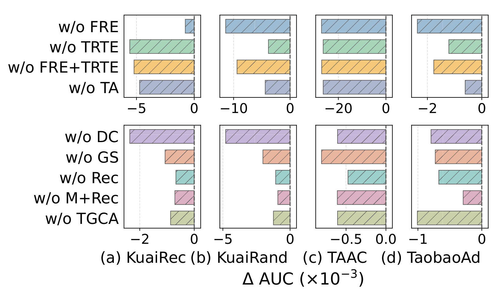
Figure 5 横轴是相对完整模型的 AUC 差，标度为千分之一，负条表示去掉组件后变差。上排检查 FRE、TRTE、两者及目标时间锚点，下排检查密度校正、组摘要、重建、遮蔽和重建联合移除，以及组内交互。TAAC 去掉 FRE 或 TRTE 后分别从 0.6337 降至约 0.6066 和 0.6073，两者都承担明显作用；但不同数据上的负条长度差别很大，不可把某一个数据集的贡献比例推广到其他数据。移除重建保留遮蔽，联合移除同时关闭两者，二者不是同一个干预。组内交互对照恢复逐事件因果但保留组、摘要和重建，也不是删除整个 TGCI。目标感知移除只改参考时间，故支持目标锚点的作用。图没有显示多模块所有组合，因此不能单凭单移除图精确分解各模块独立收益或相互作用项。下排的量级还与上排不同，例如同一数据中位置表示移除可能比重建移除大得多。阅读时应以各小图刻度复原绝对差值，不能根据条形在版面上的视觉长度跨面板比较组件重要性。
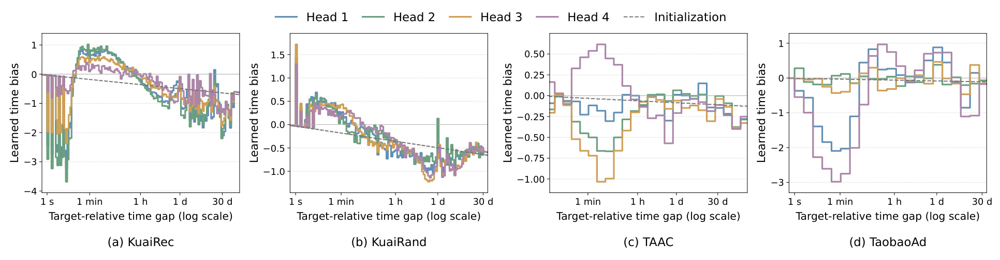
Figure 6 的横轴为目标相对时间差，对数刻度覆盖秒、分钟、小时、天乃至更远区间，纵轴是各头的原始学习势能。KuaiRec 在分钟附近有突出窗口，KuaiRand 呈较宽的近期倾向，TAAC 与 TaobaoAd 的头间差异和非单调窗口更明显。它说明模型不必服从一条统一的指数衰减曲线；不同业务的有效历史关系可能不同。灰虚线是初始化，不能当作另一个完整推荐模型的分数。最需要避免的是把这组曲线叫“用户关注概率”：它们尚未减去样本内事件密度，也未叠加查询键内容相关性，更未经过 softmax。某时段势能高，只能说时间项更偏好该区间，最终某条事件是否获权重仍取决于内容和可见集合。图中的细碎波动还可能来自稀疏桶，不足以单独认定某段时间存在稳定业务规律；附录实际偏置提供了进一步核对。图中的四条头曲线不等于四类固定用户，其参数由整个训练分布共同学习；不同请求仍通过各自内容键和桶内数量改变最终历史读取。将每个头人为命名成某种兴趣类型，超出了这些曲线提供的证据。
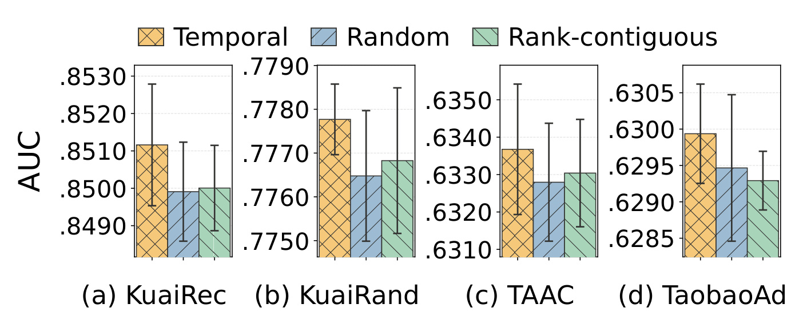
Figure 7 逐数据比较时间分组、随机分组和秩连续分组，均保留原方案每个样本的组数及组大小。随机组标签使用固定种子哈希，同一样本跨训练步不变；秩连续对照先置换原有组大小，再按相邻有效秩分段，既不是固定宽度，也不是等长块。这些约束使结果更接近回答“时间语义是否有贡献”，而非仅比较不同压缩率。时间分组在四数据上取得最高平均 AUC，但误差棒存在交叠，不能仅凭图宣称所有差异均显著。某些数据上的优势很小，例如 TaobaoAd 的几根柱接近，真实应用仍应对照训练波动。图提供的支持是：相同压缩数量下，按目标时间差聚合通常更有效；并没有证明固定对数分组就是最优边界，也不说明它能追踪每个用户真实兴趣变化点。自适应分组仍是作者明确提出的后续方向。随机对照在整个训练期间稳定，避免了每步随机重分组额外引入的优化噪声；秩连续对照也保留原大小，因此这两项控制较好地把组内容的语义差异从组数差异中分离出来。
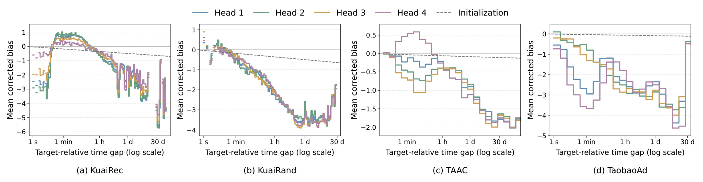
Figure 10 在每个数据集抽取 8192 个测试样本，将事件按时间区间平均，画出减去密度惩罚后的偏置。与 Figure 6 原始势能相比，一些高活跃区间的相对优势被压低，说明“该区间出现很多事件”与“该区间每条事件都应重要”确实可以被区分。同一桶的数量惩罚对所有头共享，因此仍保留头间偏好差异，但整体形状明显改变。这个图也不是最终注意力图，内容点积仍未纳入；尤其不能根据某条曲线为负就判定该段所有事件被忽略，softmax 关心相对分数，所有事件都可能具有负偏置。虚线表示未校正的初始化，与实线同时存在多项训练后变化，不是严格的单因素因果对照。真正关于密度校正有效性的证据来自前面的移除实验以及附录非零强度优于零的扫描。二者结合说明该机制值得测试，但强惩罚也可能压制真实密集兴趣。附录扫描显示四数据的最佳观测值均对应非零惩罚，但继续增加强度没有一致收益，支持的是适度数量校正，而不是把活跃时间段越压越低。
3.4 训练成本与概率校准的边界
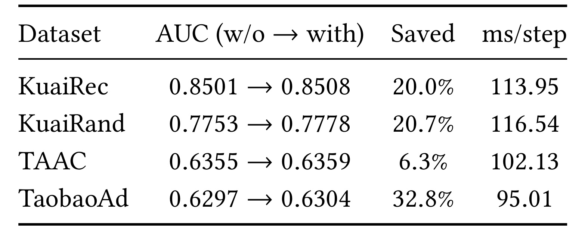
Table 5 的 AUC 列按无压缩到有压缩排列，Saved 是相对无压缩的每步训练时间节省，最后一列为压缩后毫秒每步。四数据依次节省 20.0%、20.7%、6.3%、32.8%，且 AUC 均略升，例如 TaobaoAd 从 0.6297 到 0.6304，时间从 141.31 到 95.01 毫秒。它说明首层先上下文化、后层用摘要能够兼顾信息与计算，不能证明均值池化保留了全部事件差异。该表只给单次运行，数值不能替代主表三种子均值，也不能把 TAAC 的 0.6359 视为更换了主结果。附录另报优化时间偏置实现的 TaobaoAd 72.63 毫秒，对 OneTrans 73.78、HyFormer 147.23 等；那个实现口径不同，不能用 72.63 除以本表无压缩时间拼一个更大加速比。首块仍处理完整长度，压缩收益只在后续块出现，因此层数、组数及预测字段数都会改变节省幅度。论文没有给生产环境多候选端到端延迟，理论可缓存也不等于已实现线上复用。
附录 B.5 提供更具体的失败分析。KuaiRand 的种子 42 中，TRIP-B 平均预测正反馈概率为 46.74%，真实仅 37.67%；占测试 19.03% 的 tab=0 场景真实正率 11.64%，预测却为 36.05%，贡献相对 MixFormer 样本加权净 LogLoss 差的 69.93%。验证集上拟合的正斜率仿射 logit 校准把该种子的损失从 0.5778 降到 0.5471，并不改变 AUC；对两个模型都校准后，损失差由 0.0300 缩至 0.0011。这些数值与主表 0.5692 不同，因为后者是三种子平均，不能把两者描述成同一模型一次处理的前后值。
校准实验支持“主要问题可由概率偏差解释”的诊断，却不等于验证后系统已经普遍校准。若线上场景占比、曝光政策或反馈定义变化，固定映射仍可能漂移。AUC 的相对顺序不变也意味着这类单调校准改善的是概率尺度，而非创造新的个体排序信息。对于 CTR 进入出价或效用计算的系统，应同时观察场景条件校准、全局分布与排序，避免只按主表最高 AUC 决策。
附录敏感性还显示，参数容量和时间分辨率都不是越大越好。TAAC 的因子化宽度由 1 到 10 时 AUC 从 0.6095 升至 0.6340，增加到 16 后回落；KuaiRand 的更细时间分辨率有益，而 TAAC 和 TaobaoAd 更适合较粗设置。七参数扫描的参照点独立重跑，测试峰值不必等于验证选定设置，也不必与主表完全一致。这里不把敏感性曲线全部插入正文，但保留这些反例，以避免将某个数据集的最优值当作默认工程常数。
4. 总结
TRIP 最有价值的贡献是把容易混在一起的三个问题拆开：用户历史在序列中的秩、该历史距离本次目标的时间、以及过去事件相互解释的范围。FRE 允许点击任务学习紧凑位置几何，TRTE 让同一历史随目标时刻改变意义，TGCI 则在已观测的局部时间组内交换信息后压缩。四数据与跨骨干对照支持这种分解有用，但并不意味着应把所有旧系统一次换成完整 TRIP。现有排序链可以先测时间相对坐标与密度校正，再独立测组内交互与摘要压缩，保持同一历史可见性和训练预算，才能判断瓶颈到底在哪里。
对大模型和个性化记忆的启发属于迁移假设：长行为历史未必适合固定 token 因果几何，某个已完成会话或局部消费片段可以先双向表征，再按时间阶段聚合。这不同于让生成模型读取未知未来，也不等于 CTR 模型可以直接用于自然语言推理。若在 RAG 或 Agent 历史缓存中采用类似办法，应重新定义“目标时间”“可观测组”和候选相关性，不能把本文以秒为单位的分组边界原样搬过去。尤其在同请求多候选场景，历史侧可共享是否成立，取决于输入和时间坐标是否真的候选无关。
局限首先是固定对数组边界不对应每个用户的真实兴趣转换，一个长时间桶里仍可能同时包含多个无关任务；第二，均值摘要会丢失事件细节，少见但关键的行为可能被大量普通行为平均掉，后层再也无法逐事件访问；第三，概率校准存在明确反例，KuaiRand 的排序优势不能消除场景条件下的概率高估，校准器也需要持续验证；第四，实证只含四公开数据及特定单轮训练设置，没有生产 A/B，线上目标与曝光变化尚未验证；第五，效率口径有限，单步训练节省、优化实现时间和理论缓存复用不能混成完整服务提速，数据预处理及时间维护成本仍须单独计算。上述限制各自对应不同失效环节，不适合合并成一个“数据偏差”标签就略过。
在验收上还应区分验证调参与测试诊断。正文超参数由训练和验证数据确定，而附录敏感性展示测试曲线及独立重跑参照，不能根据最高测试点回选部署配置后仍把测试结果称为无偏估计。概率校准同样必须在验证数据拟合，评估时同时保留未校准值，才能知道改进来自表示还是后处理。若未来公开代码与本文时间桶索引、分组上限或实现计时口径不同，需要逐项定位差异，而不是只追一个四位小数的总分。
后续首先应在时间严格切分的自有数据上验证目标相对特征，检查同秒事件、延迟上报、跨时区及目标后事件是否处理一致，因为不正确的时间语义会直接破坏全部模块。其次应做等组数、等组大小、等参数量的交互与压缩对照，同时报告排序、场景校准和尾部用户指标，确认增益不是只来自高活跃群体。第三应测试选择性保留关键事件和自适应分组，观察其是否改善均值压缩的稀有信号损失，并把重建训练成本计入。第四在统一部署实现中测多候选吞吐、峰值显存及延迟分位数，避免用单个训练步的平均时间代替线上预算。代码公开后还应核对 B/R 两变体的应用层、摘要时间重算与重建 stop-gradient，这三处实现差异都足以使复现实验偏离论文。